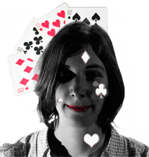

About
Ik ben Jasmin De Witte en ik ben trots om een grafisch vormgever te zijn.
Ik ben een grafisch vormgever gevestigd in Sint-Niklaas, Oost-Vlaanderen.
Ik ben pas afgestudeerd als crossmedia-ontwerper aan de Arteveldehogeschool.
Met lef, visie en passie ontwerp ik uw logo, huisstijl, flyers en andere communicatiemiddelen.
Ik richt me zowel op print als non-print designs.
Ik ontwerp mooie, gebruiksvriendelijke en professionele websites rekeninghoudend met de allernieuwste technologieën.
In de toekomst wil ik me verder ontplooien tot een deviner (combinatie van designer en developer).
Ik sta te popelen om zelf websites en applicaties te ontwikkelen.
Bekijk zeker mijn portfolio zo kan u zien wat ik voor u kan doen of neem contact met me op indien u specifieke vragen heeft.